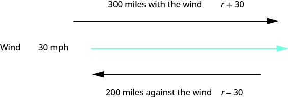
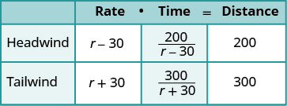
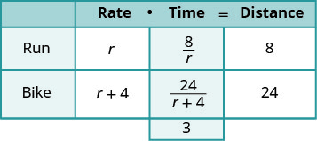
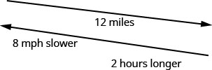
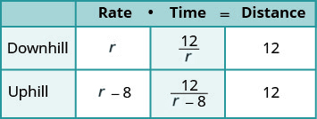
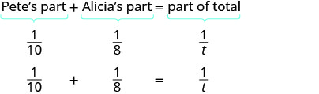
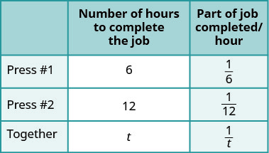
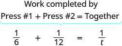
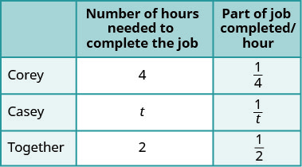

Solve Uniform Motion and Work Applications
Solve Uniform Motion Applications
We have solved uniform motion problems using the formula in previous chapters. We used a table like the one below to organize the information and lead us to the equation.
The formula assumes we know r and t and use them to find D. If we know D and r and need to find t, we would solve the equation for t and get the formula .
We have also explained how flying with or against a current affects the speed of a vehicle. We will revisit that idea in the next example.
An airplane can fly 200 miles into a 30 mph headwind in the same amount of time it takes to fly 300 miles with a 30 mph tailwind. What is the speed of the airplane?
Solution
Solution
This is a uniform motion situation. A diagram will help us visualize the situation.

We fill in the chart to organize the information.
| We are looking for the speed of the airplane. | Let the speed of the airplane. |
| When the plane flies with the wind, the wind increases its speed and the rate is . | |
| When the plane flies against the wind, the wind decreases its speed and the rate is . | |
| Write in the rates. Write in the distances. Since , we solve for t and get . We divide the distance by the rate in each row, and place the expression in the time column. |
 |
| We know the times are equal and so we write our equation. | |
| We multiply both sides by the LCD. |
|
| Simplify. | |
| Solve. |
|
| Check. | |
| Is 150 mph a reasonable speed for an airplane? Yes. If the plane is traveling 150 mph and the wind is 30 mph: | |
| Tailwind hours | |
| Headwind hours | |
| The times are equal, so it checks. | The plane was traveling 150 mph. |
In the next example, we will know the total time resulting from travelling different distances at different speeds.
Jazmine trained for 3 hours on Saturday. She ran 8 miles and then biked 24 miles. Her biking speed is 4 mph faster than her running speed. What is her running speed?
Solution
Solution
This is a uniform motion situation. A diagram will help us visualize the situation.

We fill in the chart to organize the information.
| We are looking for Jazmine’s running speed. | Let Jazmine’s running speed. |
| Her biking speed is 4 miles faster than her running speed. | her biking speed |
| The distances are given, enter them into the chart. | |
| Since , we solve for t and get . We divide the distance by the rate in each row, and place the expression in the time column. |
 |
| Write a word sentence. | Her time plus the time biking is 3 hours. |
| Translate the sentence to get the equation. | |
| Solve. | |
| Check. | |
| A negative speed does not make sense in this problem, so is the solution. | |
| Is 8 mph a reasonable running speed? Yes. | |
Once again, we will use the uniform motion formula solved for the variable t.
Hamilton rode his bike downhill 12 miles on the river trail from his house to the ocean and then rode uphill to return home. His uphill speed was 8 miles per hour slower than his downhill speed. It took him 2 hours longer to get home than it took him to get to the ocean. Find Hamilton’s downhill speed.
Solution
Solution
This is a uniform motion situation. A diagram will help us visualize the situation.

We fill in the chart to organize the information.
| We are looking for Hamilton’s downhill speed. | Let Hamilton’s downhill speed. |
| His uphill speed is 8 miles per hour slower. Enter the rates into the chart. | Hamilton’s uphill speed |
| The distance is the same in both directions, 12 miles. Since , we solve for t and get . We divide the distance by the rate in each row, and place the expression in the time column. |
 |
| Write a word sentence about the time. | He took 2 hours longer uphill than downhill. The uphill time is 2 more than the downhill time. |
| Translate the sentence to get the equation. Solve. |
|
| Check. Is 12 mph a reasonable speed for biking downhill? Yes. | |
| Downhill | |
| Uphill | |
| The uphill time is 2 hours more than the downhill time. Hamilton’s downhill speed is 12 mph. |
Solve Work Applications
Suppose Pete can paint a room in 10 hours. If he works at a steady pace, in 1 hour he would paint of the room. If Alicia would take 8 hours to paint the same room, then in 1 hour she would paint of the room. How long would it take Pete and Alicia to paint the room if they worked together (and didn’t interfere with each other’s progress)?
This is a typical ‘work’ application. There are three quantities involved here – the time it would take each of the two people to do the job alone and the time it would take for them to do the job together.
Let’s get back to Pete and Alicia painting the room. We will let t be the number of hours it would take them to paint the room together. So in 1 hour working together they have completed of the job.
In one hour Pete did of the job. Alicia did of the job. And together they did of the job.
We can model this with the word equation and then translate to a rational equation. To find the time it would take them if they worked together, we solve for t.
 |
|
| Multiply by the LCD,. | |
| Distribute. | |
| Simplify and solve. | |
| We’ll write as a mixed number so that we can convert it to hours and minutes. | |
| Remember, 1 hour = 60 minutes. | |
| Multiply, and then round to the nearest minute. | |
| It would take Pete and Alica about 4 hours and 27 minutes to paint the room. |
Keep in mind, it should take less time for two people to complete a job working together than for either person to do it alone.
The weekly gossip magazine has a big story about the Princess’ baby and the editor wants the magazine to be printed as soon as possible. She has asked the printer to run an extra printing press to get the printing done more quickly. Press #1 takes 6 hours to do the job and Press #2 takes 12 hours to do the job. How long will it take the printer to get the magazine printed with both presses running together?
Solution
Solution
This is a work problem. A chart will help us organize the information.
| Let the number of hours needed to complete the job together. | |
| Enter the hours per job for Press #1, Press #2 and when they work together. If a job on Press #1 takes 6 hours, then in 1 hour of the job is completed. Similarly find the part of the job completed/hours for Press #2 and when they both work together. |
 |
| Write a word sentence. | |
| The part completed by Press #1 plus the part completed by Press #2 equals the amount completed together. | |
| Translate to an equation. |  |
| Solve. | |
| Multiply by the LCD, . | |
| Simplify. | |
| When both presses are running it takes 4 hours to do the job. |
Corey can shovel all the snow from the sidewalk and driveway in 4 hours. If he and his twin Casey work together, they can finish shoveling the snow in 2 hours. How many hours would it take Casey to do the job by himself?
Solution
Solution
| This is a work application. A chart will help us organize the information. | |
| We are looking for how many hours it would take Casey to complete the job by himself. | |
| Let the number of hours needed for Casey to complete. | |
| Enter the hours per job for Corey, Casey, and when they work together. If Corey takes 4 hours, then in 1 hour of the job is completed. Similarly find the part of the job completed/hours for Casey and when they both work together. |
 |
| Write a word sentence. | |
| The part completed by Corey plus the part completed by Casey equals the amount completed together. | |
| Translate to an equation: | |
| Solve. | |
| Multiply by the LCD, . | |
| Simplify. | |
| It would take Casey 4 hours to do the job alone. | |
Practice Makes Perfect
Solve Uniform Motion Applications
In the following exercises, solve uniform motion applications
Mary takes a sightseeing tour on a helicopter that can fly 450 miles against a 35 mph headwind in the same amount of time it can travel 702 miles with a 35 mph tailwind. Find the speed of the helicopter.
Solution
A private jet can fly 1210 miles against a 25 mph headwind in the same amount of time it can fly 1694 miles with a 25 mph tailwind. Find the speed of the jet.
A boat travels 140 miles downstream in the same time as it travels 92 miles upstream. The speed of the current is 6mph. What is the speed of the boat?
Solution
Darrin can skateboard 2 miles against a 4 mph wind in the same amount of time he skateboards 6 miles with a 4 mph wind. Find the speed Darrin skateboards with no wind.
Jane spent 2 hours exploring a mountain with a dirt bike. When she rode the 40 miles uphill, she went 5 mph slower than when she reached the peak and rode for 12 miles along the summit. What was her rate along the summit?
Solution
Jill wanted to lose some weight so she planned a day of exercising. She spent a total of 2 hours riding her bike and jogging. She biked for 12 miles and jogged for 6 miles. Her rate for jogging was 10 mph less than biking rate. What was her rate when jogging?
Bill wanted to try out different water craft. He went 62 miles downstream in a motor boat and 27 miles downstream on a jet ski. His speed on the jet ski was 10 mph faster than in the motor boat. Bill spent a total of 4 hours on the water. What was his rate of speed in the motor boat?
Solution
Nancy took a 3 hour drive. She went 50 miles before she got caught in a storm. Then she drove 68 miles at 9 mph less than she had driven when the weather was good. What was her speed driving in the storm?
Chester rode his bike uphill 24 miles and then back downhill at 2 mph faster than his uphill. If it took him 2 hours longer to ride uphill than downhill, l, what was his uphill rate?
Solution
Matthew jogged to his friend’s house 12 miles away and then got a ride back home. It took him 2 hours longer to jog there than ride back. His jogging rate was 25 mph slower than the rate when he was riding. What was his jogging rate?
Hudson travels 1080 miles in a jet and then 240 miles by car to get to a business meeting. The jet goes 300 mph faster than the rate of the car, and the car ride takes 1 hour longer than the jet. What is the speed of the car?
Solution
Nathan walked on an asphalt pathway for 12 miles. He walked the 12 miles back to his car on a gravel road through the forest. On the asphalt he walked 2 miles per hour faster than on the gravel. The walk on the gravel took one hour longer than the walk on the asphalt. How fast did he walk on the gravel?
John can fly his airplane 2800 miles with a wind speed of 50 mph in the same time he can travel 2400 miles against the wind. If the speed of the wind is 50 mph, find the speed of his airplane.
Solution
Jim’s speedboat can travel 20 miles upstream against a 3 mph current in the same amount of time it travels 22 miles downstream with a 3 mph current speed. Find the speed of the Jim’s boat.
Hazel needs to get to her granddaughter’s house by taking an airplane and a rental car. She travels 900 miles by plane and 250 miles by car. The plane travels 250 mph faster than the car. If she drives the rental car for 2 hours more than she rode the plane, find the speed of the car.
Solution
Stu trained for 3 hours yesterday. He ran 14 miles and then biked 40 miles. His biking speed is 6 mph faster than his running speed. What is his running speed?
When driving the 9 hour trip home, Sharon drove 390 miles on the interstate and 150 miles on country roads. Her speed on the interstate was 15 more than on country roads. What was her speed on country roads?
Solution
Two sisters like to compete on their bike rides. Tamara can go 4 mph faster than her sister, Samantha. If it takes Samantha 1 hours longer than Tamara to go 80 miles, how fast can Samantha ride her bike?
Solve Work Applications
In the following exercises, solve work applications.
Mike, an experienced bricklayer, can build a wall in 3 hours, while his son, who is learning, can do the job in 6 hours. How long does it take for them to build a wall together?
Solution
It takes Sam 4 hours to rake the front lawn while his brother, Dave, can rake the lawn in 2 hours. How long will it take them to rake the lawn working together?
Mary can clean her apartment in 6 hours while her roommate can clean the apartment in 5 hours. If they work together, how long would it take them to clean the apartment?
Solution
Brian can lay a slab of concrete in 6 hours, while Greg can do it in 4 hours. If Brian and Greg work together, how long will it take?
Leeson can proofread a newspaper copy in 4 hours. If Ryan helps, they can do the job in 3 hours. How long would it take for Ryan to do his job alone?
Solution
Paul can clean a classroom floor in 3 hours. When his assistant helps him, the job takes 2 hours. How long would it take the assistant to do it alone?
Josephine can correct her students’ test papers in 5 hours, but if her teacher’s assistant helps, it would take them 3 hours. How long would it take the assistant to do it alone?
Solution
Washing his dad’s car alone, eight year old Levi takes 2.5 hours. If his dad helps him, then it takes 1 hour. How long does it take the Levi’s dad to wash the car by himself?
Jackson can remove the shingles off of a house in 7 hours, while Martin can remove the shingles in 5 hours. How long will it take them to remove the shingles if they work together?
Solution
At the end of the day Dodie can clean her hair salon in 15 minutes. Ann, who works with her, can clean the salon in 30 minutes. How long would it take them to clean the shop if they work together?
Ronald can shovel the driveway in 4 hours, but if his brother Donald helps it would take 2 hours. How long would it take Donald to shovel the driveway alone?
Solution
It takes Tina 3 hours to frost her holiday cookies, but if Candy helps her it takes 2 hours. How long would it take Candy to frost the holiday cookies by herself?
Everyday Math
Dana enjoys taking her dog for a walk, but sometimes her dog gets away and she has to run after him. Dana walked her dog for 7 miles but then had to run for 1 mile, spending a total time of 2.5 hours with her dog. Her running speed was 3 mph faster than her walking speed. Find her walking speed.
Solution
3 mph
Ken and Joe leave their apartment to go to a football game 45 miles away. Ken drives his car 30 mph faster Joe can ride his bike. If it takes Joe 2 hours longer than Ken to get to the game, what is Joe’s speed?
Writing Exercises
In Example 3, the solution is crossed out. Explain why.
Paula and Yuki are roommates. It takes Paula 3 hours to clean their apartment. It takes Yuki 4 hours to clean the apartment. The equation can be used to find t, the number of hours it would take both of them, working together, to clean their apartment. Explain how this equation models the situation.
Self Check
ⓐ After completing the exercises, use this checklist to evaluate your mastery of the objectives of this section.
ⓑ On a scale of 1–10, how would you rate your mastery of this section in light of your responses on the checklist? How can you improve this?